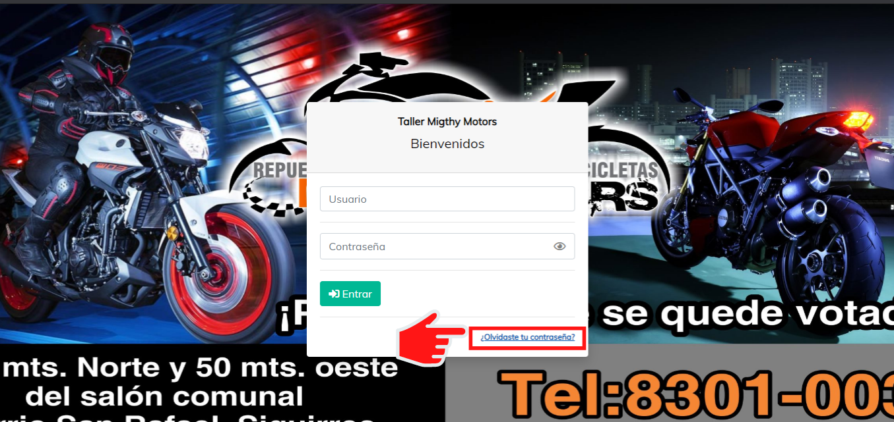
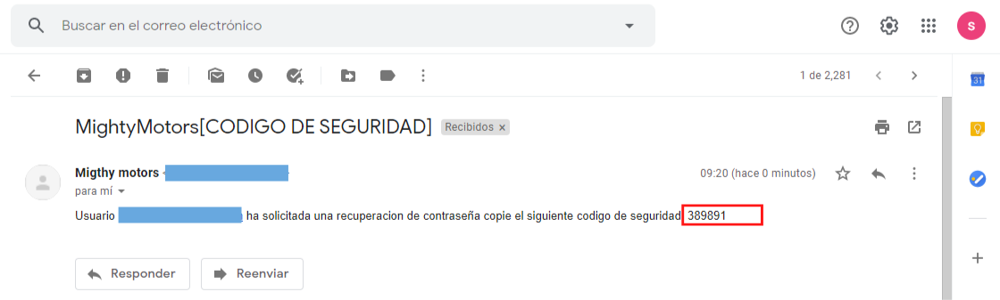
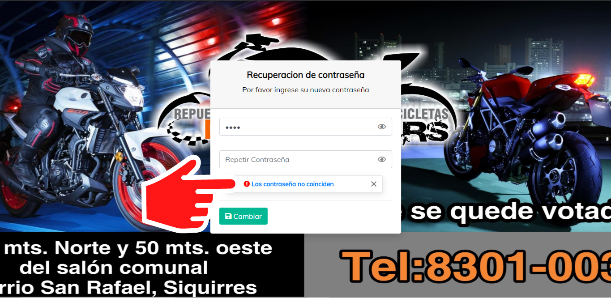

Acceso al los modulos de recuperacion de contraseña
El requerir de cambio de contraseña se da por dos situaciones, por actualización de contraseña debido al gusto del usuario , o por extravío de la misma.
NOTA.
La contraseña se actualiza una vez que el administrador nos de los datos de inicio de sesión (usuario y contraseña).
Le damos clic en la opción inferior izquierda "Olvidaste tu contraseña?".

Una vez que le demos clic, nos mostrara un modulo en donde nos solicita la dirección de correo electrónico al cual queremos que nos envíen el código de recuperación (tiene que ser la misma dirección con la cual estamos registrados en el sistema, de lo contrario no se podrá continuar con la recuperación).

En caso en el que no se logre el envió del correo electrónico se muestra una notificación como en la siguiente imagen.
En caso de que la dirección de correo electrónico sea correcta, recibirá un correo electrónico con el código de recuperación, y sera enviado hacia el modulo de ingreso de código de recuperación.
NOTA.
Mantener este modulo abierto en nuestro navegador para ingresar el código, en caso de cerrarlo tendrá que iniciar desde el principio el proceso de recuperación.

Nos dirigimos a nuestra cuenta de correo electrónico y encontraremos un correo como el de la siguiente imagen, el cual contiene un mensaje informándole sobre el proceso de recuperación de contraseña solicitado, con su nombre de usuario así como el código de recuperación, tomamos el código de recuperación , y lo ingresamos en en el modulo de ingreso de código de recuperación.

En caso de ingresar el código incorrecto, se muestra una alerta de código invalido.

Continuando con la recuperación, si el código es valido, el sistema nos redirige hacia el modulo de ingreso de la nueva contraseña.

Para el cambio de contraseña sea valido, la nueva contraseña tiene que ser verificada en el campo de repetir contraseña. En caso de que se ingresen contraseñas diferentes recibe una alerta.

Siguiendo con el proceso, si la contraseña fue actualizada correctamente se muestra un mensaje como el de la siguiente imagen.

Created with the Personal Edition of HelpNDoc: Create help files for the Qt Help Framework